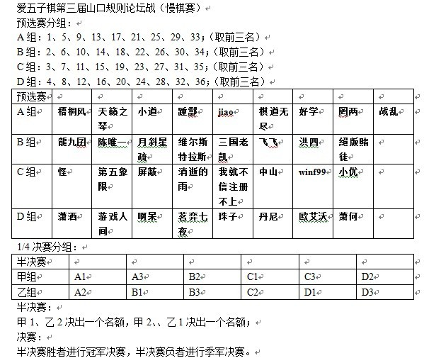

爱五子棋网第三届山口论坛战【开始报名了】（出线者八威望！）
#1 <font color="red">爱五子棋网第三届山口论坛战【开始报名了】（出线者八威望！）</font> 作者：失落刀 发表时间：2011-5-2 10:56:28
为了进一步推动五子棋的发展，开展山口规则的五子棋研究，现决定组织“爱五子棋网第三届论坛战【山口规则】”。
具体细则如下：
规则：山口规则（ShowPost.asp?ThreadID=6224）
编排：分组单循环+淘汰赛
时间：每步棋最长不能超过3天，每局每人最多21天的时间，超时算负。
奖励：凡进入淘汰赛的棋友威望+10，其他视报名情况决定
注意：特别提醒，没有耐心的用户请不要报名！另为了提高对局质量建议不要一人多号参赛！
后续日程安排要等报名结束后确定。
报名资格：威望＜5不接待报名。
判例：
10手内超时一盘或20手内和棋一盘，扣罚威望1，直至扣至-1。
［此帖子已被 失落刀 在 2011-5-2 12:09:37 编辑过］
［此帖子已被 失落刀 在 2011-5-6 21:36:07 编辑过］
［ 被感动的人 于 2011-5-11 23:11:15 时花20金币送鲜花一朵］

［此帖子已被 有志青年 在 2011-5-29 21:21:50 编辑过］
［此帖子已被 失落刀 在 2011-7-3 13:27:22 编辑过］
［此帖子已被 失落刀 在 2011-8-25 22:56:50 编辑过］
#2 Re:爱五子棋网第三届山口论坛战【开始报名了】 作者：梧桐风 发表时间：2011-5-2 11:14:56
我报名，请审核［ 失落刀 于 2011-5-2 11:15:20 时花20金币送鲜花一朵］
通过01.
［此帖子已被 失落刀 在 2011-5-2 11:15:46 编辑过］
［ 吉小鼠 于 2011-5-5 10:31:06 时花20金币送鲜花一朵］
［ 失落刀 于 2011-7-3 13:30:23 时奖励此帖[金币加 100 威望加1］
［ 失落刀 于 2011-7-3 13:30:39 时奖励此帖[金币加 100 威望加1］
［ 失落刀 于 2011-7-3 13:30:53 时奖励此帖[金币加 100 威望加1］
［ 失落刀 于 2011-7-3 13:31:08 时奖励此帖[金币加 100 威望加1］
［ 失落刀 于 2011-7-3 13:31:23 时奖励此帖[金币加 100 威望加1］
#3 Re:爱五子棋网第三届山口论坛战【开始报名了】 作者：龍九囝 发表时间：2011-5-2 11:16:50
报名，期待很久了
如果威望不够， 申请执行借威望责任条款
［此帖子已被 龍九囝 在 2011-5-2 11:20:51 编辑过］
［ 失落刀 于 2011-5-2 12:10:01 时花20金币送鲜花一朵］
通过02.
［此帖子已被 失落刀 在 2011-5-2 12:10:22 编辑过］
#4 Re:爱五子棋网第三届山口论坛战【开始报名了】 作者：梧桐风 发表时间：2011-5-2 11:19:45
偶问一下哈：那些威望小于5的想报名要怎么办呀#5 Re:爱五子棋网第三届山口论坛战【开始报名了】 作者：被感动的人 发表时间：2011-5-2 12:29:57
转述失落刀的回答：威望小于5的，原则上不接受报名。
ps：龍九囝你的秀真可爱
［此帖子已被 被感动的人 在 2011-5-2 12:33:04 编辑过］
#6 Re:爱五子棋网第三届山口论坛战【开始报名了】 作者：怪 发表时间：2011-5-2 13:04:19
报名报名报名［ 失落刀 于 2011-5-2 13:14:56 时花20金币送鲜花一朵］
通过03.
［此帖子已被 失落刀 在 2011-5-2 13:15:19 编辑过］
［ 失落刀 于 2011-7-3 13:32:24 时奖励此帖[金币加 100 威望加1］
［ 失落刀 于 2011-7-3 13:32:46 时奖励此帖[金币加 100 威望加1］
［ 失落刀 于 2011-7-3 13:33:00 时奖励此帖[金币加 100 威望加1］
［ 失落刀 于 2011-7-3 13:33:14 时奖励此帖[金币加 100 威望加1］
［ 失落刀 于 2011-7-3 13:33:29 时奖励此帖[金币加 100 威望加1］
#7 Re:爱五子棋网第三届山口论坛战【开始报名了】 作者：潇洒 发表时间：2011-5-2 13:06:02
报名
［ 失落刀 于 2011-5-2 13:15:42 时花20金币送鲜花一朵］
通过04.
［此帖子已被 失落刀 在 2011-5-2 13:16:14 编辑过］
［ 失落刀 于 2011-7-3 13:33:58 时奖励此帖[金币加 100 威望加1］
［ 失落刀 于 2011-7-3 13:34:12 时奖励此帖[金币加 100 威望加1］
［ 失落刀 于 2011-7-3 13:34:29 时奖励此帖[金币加 100 威望加1］
［ 失落刀 于 2011-7-3 13:34:49 时奖励此帖[金币加 100 威望加1］
［ 失落刀 于 2011-7-3 13:35:05 时奖励此帖[金币加 100 威望加1］
#8 Re:爱五子棋网第三届山口论坛战【开始报名了】 作者：天籁之琴 发表时间：2011-5-2 13:10:28
我也报名啦，来学习的。。［ 潇洒 于 2011-5-2 13:11:29 时花20金币送鲜花一朵］
［ 失落刀 于 2011-5-2 13:16:39 时花20金币送鲜花一朵］
通过05.
［此帖子已被 失落刀 在 2011-5-2 13:17:03 编辑过］
［ 华科无敌 于 2011-5-13 14:45:01 时花20金币送鲜花一朵］
［ 失落刀 于 2011-7-3 13:35:47 时奖励此帖[金币加 100 威望加1］
［ 失落刀 于 2011-7-3 13:36:08 时奖励此帖[金币加 100 威望加1］
［ 失落刀 于 2011-7-3 13:36:30 时奖励此帖[金币加 100 威望加1］
［ 失落刀 于 2011-7-3 13:36:49 时奖励此帖[金币加 100 威望加1］
［ 失落刀 于 2011-7-3 13:37:07 时奖励此帖[金币加 100 威望加1］
#9 Re:爱五子棋网第三届山口论坛战【开始报名了】 作者：潇洒 发表时间：2011-5-2 13:11:48
qinqin也来了，支持下［ 天籁之琴 于 2011-5-2 13:12:46 时花20金币送鲜花一朵］
#10 Re:爱五子棋网第三届山口论坛战【开始报名了】 作者：陈唯一 发表时间：2011-5-2 13:23:50
我也报个名吧［ 失落刀 于 2011-5-2 13:41:18 时花20金币送鲜花一朵］
通过06.
［此帖子已被 失落刀 在 2011-5-2 13:41:46 编辑过］
［ 失落刀 于 2011-7-3 13:39:19 时奖励此帖[金币加 100 威望加1］
［ 失落刀 于 2011-7-3 13:39:35 时奖励此帖[金币加 100 威望加1］
［ 失落刀 于 2011-7-3 13:39:50 时奖励此帖[金币加 100 威望加1］
［ 失落刀 于 2011-7-3 13:40:08 时奖励此帖[金币加 100 威望加1］
［ 失落刀 于 2011-7-3 13:40:22 时奖励此帖[金币加 100 威望加1］
#11 Re:爱五子棋网第三届山口论坛战【开始报名了】 作者：第五象限 发表时间：2011-5-2 13:51:42
报名
似乎没写报名截止期限啊
［ 失落刀 于 2011-5-2 14:04:51 时花20金币送鲜花一朵］
通过07.
人够了就报名截止撒。
［此帖子已被 失落刀 在 2011-5-2 14:05:29 编辑过］
［ 失落刀 于 2011-8-25 22:34:11 时奖励此帖[金币加 100 威望加1］
［ 失落刀 于 2011-8-25 22:34:24 时奖励此帖[金币加 100 威望加1］
［ 失落刀 于 2011-8-25 22:34:35 时奖励此帖[金币加 100 威望加1］
［ 失落刀 于 2011-8-25 22:34:49 时奖励此帖[金币加 100 威望加1］
［ 失落刀 于 2011-8-25 22:35:01 时奖励此帖[金币加 100 威望加1］
［ 失落刀 于 2011-8-25 22:35:11 时奖励此帖[金币加 100 威望加1］
［ 失落刀 于 2011-8-25 22:35:22 时奖励此帖[金币加 100 威望加1］
［ 失落刀 于 2011-8-25 22:35:34 时奖励此帖[金币加 100 威望加1］
#12 Re:爱五子棋网第三届山口论坛战【开始报名了】 作者：第五象限 发表时间：2011-5-2 14:19:33
那也没写多少人啊#13 Re:爱五子棋网第三届山口论坛战【开始报名了】 作者：被感动的人 发表时间：2011-5-2 16:26:19
张同学威望跟我一样高~#14 Re:爱五子棋网第三届山口论坛战【开始报名了】 作者：游戏人间 发表时间：2011-5-2 16:57:58
报名
［ 潇洒 于 2011-5-2 17:39:50 时花20金币送鲜花一朵］
［ 失落刀 于 2011-5-2 17:46:45 时花20金币送鲜花一朵］
通过08.
［此帖子已被 失落刀 在 2011-5-2 17:47:15 编辑过］
［ 失落刀 于 2011-7-3 13:41:02 时奖励此帖[金币加 100 威望加1］
［ 失落刀 于 2011-7-3 13:41:19 时奖励此帖[金币加 100 威望加1］
［ 失落刀 于 2011-7-3 13:41:32 时奖励此帖[金币加 100 威望加1］
［ 失落刀 于 2011-7-3 13:41:47 时奖励此帖[金币加 100 威望加1］
［ 失落刀 于 2011-7-3 13:42:01 时奖励此帖[金币加 100 威望加1］
#15 Re:爱五子棋网第三届山口论坛战【开始报名了】 作者：小道 发表时间：2011-5-2 17:09:02
报名！报名！［ 失落刀 于 2011-5-2 17:47:30 时花20金币送鲜花一朵］
通过09.
［此帖子已被 失落刀 在 2011-5-2 17:47:54 编辑过］
［ 失落刀 于 2011-7-3 13:42:26 时奖励此帖[金币加 100 威望加1］
［ 失落刀 于 2011-7-3 13:42:42 时奖励此帖[金币加 100 威望加1］
［ 失落刀 于 2011-7-3 13:42:58 时奖励此帖[金币加 100 威望加1］
［ 失落刀 于 2011-7-3 13:43:12 时奖励此帖[金币加 100 威望加1］
［ 失落刀 于 2011-7-3 13:43:30 时奖励此帖[金币加 100 威望加1］
#16 Re:爱五子棋网第三届山口论坛战【开始报名了】 作者：月斜星疏 发表时间：2011-5-2 19:11:34
报名［ 失落刀 于 2011-5-2 19:21:48 时花20金币送鲜花一朵］
通过10.
［此帖子已被 失落刀 在 2011-5-2 19:22:24 编辑过］
#17 Re:爱五子棋网第三届山口论坛战【开始报名了】 作者：屏蔽 发表时间：2011-5-2 21:10:16
搞起。报名。
体验一下网络比赛什么状态。
［ 潇洒 于 2011-5-2 21:15:49 时花20金币送鲜花一朵］
［ 失落刀 于 2011-5-2 21:37:37 时花20金币送鲜花一朵］
通过11.
［此帖子已被 失落刀 在 2011-5-2 21:38:06 编辑过］
［ 失落刀 于 2011-7-3 13:44:05 时奖励此帖[金币加 100 威望加1］
［ 失落刀 于 2011-7-3 13:44:20 时奖励此帖[金币加 100 威望加1］
［ 失落刀 于 2011-7-3 13:44:34 时奖励此帖[金币加 100 威望加1］
［ 失落刀 于 2011-7-3 13:44:51 时奖励此帖[金币加 100 威望加1］
［ 失落刀 于 2011-7-3 13:45:09 时奖励此帖[金币加 100 威望加1］
#18 Re:爱五子棋网第三届山口论坛战【开始报名了】 作者：啊呆 发表时间：2011-5-2 23:26:06
报名～
［ 失落刀 于 2011-5-2 23:46:51 时花20金币送鲜花一朵］
通过12.
［此帖子已被 失落刀 在 2011-5-2 23:47:18 编辑过］
#19 Re:爱五子棋网第三届山口论坛战【开始报名了】 作者：踵酃 发表时间：2011-5-3 7:44:51
报名。。。。。。。。。。。。。。［ 失落刀 于 2011-5-3 17:01:25 时花20金币送鲜花一朵］
通过13.
［此帖子已被 失落刀 在 2011-5-3 17:01:54 编辑过］
［ 失落刀 于 2011-8-25 22:36:03 时奖励此帖[金币加 100 威望加1］
［ 失落刀 于 2011-8-25 22:36:21 时奖励此帖[金币加 100 威望加1］
［ 失落刀 于 2011-8-25 22:36:38 时奖励此帖[金币加 100 威望加1］
［ 失落刀 于 2011-8-25 22:36:58 时奖励此帖[金币加 100 威望加1］
［ 失落刀 于 2011-8-25 22:38:46 时奖励此帖[金币加 100 威望加1］
［ 失落刀 于 2011-8-25 22:39:04 时奖励此帖[金币加 100 威望加1］
［ 失落刀 于 2011-8-25 22:39:21 时奖励此帖[金币加 100 威望加1］
［ 失落刀 于 2011-8-25 22:39:42 时奖励此帖[金币加 100 威望加1］
#20 Re:爱五子棋网第三届山口论坛战【开始报名了】 作者：维尔斯特拉斯 发表时间：2011-5-3 9:02:42
报名~~~~~~~~~
［ 失落刀 于 2011-5-3 17:02:36 时花20金币送鲜花一朵］
通过14.
［此帖子已被 失落刀 在 2011-5-3 17:03:00 编辑过］
［ 失落刀 于 2011-7-3 13:45:45 时奖励此帖[金币加 100 威望加1］
［ 失落刀 于 2011-7-3 13:45:58 时奖励此帖[金币加 100 威望加1］
［ 失落刀 于 2011-7-3 13:46:13 时奖励此帖[金币加 100 威望加1］
［ 失落刀 于 2011-7-3 13:46:30 时奖励此帖[金币加 100 威望加1］
［ 失落刀 于 2011-7-3 13:46:48 时奖励此帖[金币加 100 威望加1］
#21 Re:爱五子棋网第三届山口论坛战【开始报名了】 作者：消逝的雨 发表时间：2011-5-3 10:48:33
报名
［ 失落刀 于 2011-5-3 17:03:26 时花20金币送鲜花一朵］
通过15.
［此帖子已被 失落刀 在 2011-5-3 17:03:47 编辑过］
［ 失落刀 于 2011-7-3 13:47:16 时奖励此帖[金币加 100 威望加1］
［ 失落刀 于 2011-7-3 13:47:28 时奖励此帖[金币加 100 威望加1］
［ 失落刀 于 2011-7-3 13:47:40 时奖励此帖[金币加 100 威望加1］
［ 失落刀 于 2011-7-3 13:47:52 时奖励此帖[金币加 100 威望加1］
［ 失落刀 于 2011-7-3 13:48:03 时奖励此帖[金币加 100 威望加1］
#22 Re:爱五子棋网第三届山口论坛战【开始报名了】 作者：茗弈七夜 发表时间：2011-5-3 11:37:20
我来报个名啊［ 失落刀 于 2011-5-3 17:03:58 时花20金币送鲜花一朵］
通过16.
［此帖子已被 失落刀 在 2011-5-3 17:04:22 编辑过］
［ 失落刀 于 2011-7-3 13:48:26 时奖励此帖[金币加 100 威望加1］
［ 失落刀 于 2011-7-3 13:48:41 时奖励此帖[金币加 100 威望加1］
［ 失落刀 于 2011-7-3 13:49:04 时奖励此帖[金币加 100 威望加1］
［ 失落刀 于 2011-7-3 13:49:15 时奖励此帖[金币加 100 威望加1］
［ 失落刀 于 2011-7-3 13:49:29 时奖励此帖[金币加 100 威望加1］
#23 Re:爱五子棋网第三届山口论坛战【开始报名了】 作者：jiao 发表时间：2011-5-3 16:19:06
报名
［ 失落刀 于 2011-5-3 17:04:36 时花20金币送鲜花一朵］
通过17.
［此帖子已被 失落刀 在 2011-5-3 17:04:59 编辑过］
［ 失落刀 于 2011-8-25 22:40:05 时奖励此帖[金币加 100 威望加1］
［ 失落刀 于 2011-8-25 22:40:19 时奖励此帖[金币加 100 威望加1］
［ 失落刀 于 2011-8-25 22:40:34 时奖励此帖[金币加 100 威望加1］
［ 失落刀 于 2011-8-25 22:40:48 时奖励此帖[金币加 100 威望加1］
［ 失落刀 于 2011-8-25 22:41:02 时奖励此帖[金币加 100 威望加1］
［ 失落刀 于 2011-8-25 22:41:17 时奖励此帖[金币加 100 威望加1］
［ 失落刀 于 2011-8-25 22:41:33 时奖励此帖[金币加 100 威望加1］
［ 失落刀 于 2011-8-25 22:41:51 时奖励此帖[金币加 100 威望加1］
#24 Re:爱五子棋网第三届山口论坛战【开始报名了】 作者：三国老凯 发表时间：2011-5-3 16:26:56
报名［ 失落刀 于 2011-5-3 17:05:12 时花20金币送鲜花一朵］
通过18.
［此帖子已被 失落刀 在 2011-5-3 17:05:33 编辑过］
［ 失落刀 于 2011-7-3 13:49:53 时奖励此帖[金币加 100 威望加1］
［ 失落刀 于 2011-7-3 13:50:08 时奖励此帖[金币加 100 威望加1］
［ 失落刀 于 2011-7-3 13:50:27 时奖励此帖[金币加 100 威望加1］
［ 失落刀 于 2011-7-3 13:50:43 时奖励此帖[金币加 100 威望加1］
［ 失落刀 于 2011-7-3 13:50:56 时奖励此帖[金币加 100 威望加1］
#25 Re:爱五子棋网第三届山口论坛战【开始报名了】 作者：我就不信注册不上 发表时间：2011-5-3 17:13:58
我也报名［ 失落刀 于 2011-5-3 18:01:29 时花20金币送鲜花一朵］
通过19.
［此帖子已被 失落刀 在 2011-5-3 18:01:59 编辑过］
［ 失落刀 于 2011-7-3 13:51:17 时奖励此帖[金币加 100 威望加1］
［ 失落刀 于 2011-7-3 13:51:33 时奖励此帖[金币加 100 威望加1］
［ 失落刀 于 2011-7-3 13:51:46 时奖励此帖[金币加 100 威望加1］
［ 失落刀 于 2011-7-3 13:52:00 时奖励此帖[金币加 100 威望加1］
［ 失落刀 于 2011-7-3 13:52:16 时奖励此帖[金币加 100 威望加1］
#26 Re:爱五子棋网第三届山口论坛战【开始报名了】 作者：珠子 发表时间：2011-5-3 18:16:54
报名，请潇洒为我担保威望。［ 潇洒 于 2011-5-3 18:20:22 时花20金币送鲜花一朵］
［ 失落刀 于 2011-5-3 18:27:42 时花20金币送鲜花一朵］
通过20.
［此帖子已被 失落刀 在 2011-5-3 18:28:12 编辑过］
#27 Re:爱五子棋网第三届山口论坛战【开始报名了】 作者：潇洒 发表时间：2011-5-3 18:19:57
同意帮珠子担保威望5个..#28 Re:爱五子棋网第三届山口论坛战【开始报名了】 作者：潇洒 发表时间：2011-5-3 18:29:04
教主说报名人数够30个就开始比赛..
大家快报名..
#29 Re:爱五子棋网第三届山口论坛战【开始报名了】 作者：棋道无尽 发表时间：2011-5-3 19:57:03
菜鸟不怕输，而且还没下过山口，本着学习的心态也来玩一下［ 失落刀 于 2011-5-3 20:00:37 时花20金币送鲜花一朵］
通过21.
后因其他原因没有参赛，因此不予以奖励。----失落刀
［此帖子已被 失落刀 在 2011-5-3 20:01:05 编辑过］
［此帖子已被 失落刀 在 2011-7-3 13:53:33 编辑过］
#30 Re:爱五子棋网第三届山口论坛战【开始报名了】 作者：飞飞 发表时间：2011-5-3 23:04:32
初次山口规则比赛。
我报名！
［ 失落刀 于 2011-5-3 23:14:41 时花20金币送鲜花一朵］
通过22.
［此帖子已被 失落刀 在 2011-5-3 23:15:15 编辑过］
［ 失落刀 于 2011-7-3 13:54:04 时奖励此帖[金币加 100 威望加1］
［ 失落刀 于 2011-7-3 13:54:17 时奖励此帖[金币加 100 威望加1］
［ 失落刀 于 2011-7-3 13:54:30 时奖励此帖[金币加 100 威望加1］
［ 失落刀 于 2011-7-3 13:54:45 时奖励此帖[金币加 100 威望加1］
［ 失落刀 于 2011-7-3 13:55:00 时奖励此帖[金币加 100 威望加1］
#31 Re:爱五子棋网第三届山口论坛战【开始报名了】 作者：中山 发表时间：2011-5-4 18:01:13
报名
［ 潇洒 于 2011-5-4 18:03:15 时花20金币送鲜花一朵］
［ 失落刀 于 2011-5-5 6:00:24 时花20金币送鲜花一朵］
通过23.
［此帖子已被 失落刀 在 2011-5-5 6:00:43 编辑过］
［ 失落刀 于 2011-8-25 22:43:36 时奖励此帖[金币加 100 威望加1］
［ 失落刀 于 2011-8-25 22:43:47 时奖励此帖[金币加 100 威望加1］
［ 失落刀 于 2011-8-25 22:43:57 时奖励此帖[金币加 100 威望加1］
［ 失落刀 于 2011-8-25 22:44:07 时奖励此帖[金币加 100 威望加1］
［ 失落刀 于 2011-8-25 22:44:19 时奖励此帖[金币加 100 威望加1］
［ 失落刀 于 2011-8-25 22:44:30 时奖励此帖[金币加 100 威望加1］
［ 失落刀 于 2011-8-25 22:44:41 时奖励此帖[金币加 100 威望加1］
［ 失落刀 于 2011-8-25 22:44:52 时奖励此帖[金币加 100 威望加1］
#32 Re:爱五子棋网第三届山口论坛战【开始报名了】 作者：维尔斯特拉斯 发表时间：2011-5-4 19:36:35
大家赶紧踊跃报名撒！~
#33 Re:爱五子棋网第三届山口论坛战【开始报名了】 作者：丹尼 发表时间：2011-5-5 11:45:24
报名，谢谢~~
［ 失落刀 于 2011-5-5 19:22:04 时花20金币送鲜花一朵］
通过24.
［此帖子已被 失落刀 在 2011-5-5 19:23:05 编辑过］
［ 失落刀 于 2011-7-3 13:55:24 时奖励此帖[金币加 100 威望加1］
［ 失落刀 于 2011-7-3 13:55:39 时奖励此帖[金币加 100 威望加1］
［ 失落刀 于 2011-7-3 13:55:51 时奖励此帖[金币加 100 威望加1］
［ 失落刀 于 2011-7-3 13:56:03 时奖励此帖[金币加 100 威望加1］
［ 失落刀 于 2011-7-3 13:56:15 时奖励此帖[金币加 100 威望加1］
#34 Re:爱五子棋网第三届山口论坛战【开始报名了】 作者：好学 发表时间：2011-5-5 11:50:17
报名，谢谢［ 失落刀 于 2011-5-5 19:23:22 时花20金币送鲜花一朵］
通过25.
［此帖子已被 失落刀 在 2011-5-5 19:23:55 编辑过］
［ 失落刀 于 2011-7-3 13:56:38 时奖励此帖[金币加 100 威望加1］
［ 失落刀 于 2011-7-3 13:56:50 时奖励此帖[金币加 100 威望加1］
［ 失落刀 于 2011-7-3 13:57:05 时奖励此帖[金币加 100 威望加1］
［ 失落刀 于 2011-7-3 13:57:20 时奖励此帖[金币加 100 威望加1］
［ 失落刀 于 2011-7-3 13:57:34 时奖励此帖[金币加 100 威望加1］
#35 Re:爱五子棋网第三届山口论坛战【开始报名了】 作者：洪四 发表时间：2011-5-6 12:08:42
报名，学习，打酱油！
［ 失落刀 于 2011-5-6 19:44:29 时花20金币送鲜花一朵］
通过26.
［此帖子已被 失落刀 在 2011-5-6 19:44:57 编辑过］
［ 失落刀 于 2011-7-3 13:57:57 时奖励此帖[金币加 100 威望加1］
［ 失落刀 于 2011-7-3 13:58:09 时奖励此帖[金币加 100 威望加1］
［ 失落刀 于 2011-7-3 13:58:22 时奖励此帖[金币加 100 威望加1］
［ 失落刀 于 2011-7-3 13:58:35 时奖励此帖[金币加 100 威望加1］
［ 失落刀 于 2011-7-3 13:58:48 时奖励此帖[金币加 100 威望加1］
#36 Re:爱五子棋网第三届山口论坛战【开始报名了】 作者：winf99 发表时间：2011-5-6 12:22:16
报名，向高手学习！［ 失落刀 于 2011-5-6 19:45:14 时花20金币送鲜花一朵］
通过27.
［此帖子已被 失落刀 在 2011-5-6 19:45:38 编辑过］
［ 失落刀 于 2011-7-3 13:59:08 时奖励此帖[金币加 100 威望加1］
［ 失落刀 于 2011-7-3 13:59:22 时奖励此帖[金币加 100 威望加1］
［ 失落刀 于 2011-7-3 13:59:37 时奖励此帖[金币加 100 威望加1］
［ 失落刀 于 2011-7-3 13:59:53 时奖励此帖[金币加 100 威望加1］
［ 失落刀 于 2011-7-3 14:00:06 时奖励此帖[金币加 100 威望加1］
#37 Re:爱五子棋网第三届山口论坛战【开始报名了】 作者：欧艾沃 发表时间：2011-5-6 14:30:51
报名［ 潇洒 于 2011-5-6 14:52:24 时花20金币送鲜花一朵］
［ 失落刀 于 2011-5-6 19:45:57 时花20金币送鲜花一朵］
通过28.
［此帖子已被 失落刀 在 2011-5-6 19:46:26 编辑过］
［ 失落刀 于 2011-8-25 22:45:24 时奖励此帖[金币加 100 威望加1］
［ 失落刀 于 2011-8-25 22:45:39 时奖励此帖[金币加 100 威望加1］
［ 失落刀 于 2011-8-25 22:45:54 时奖励此帖[金币加 100 威望加1］
［ 失落刀 于 2011-8-25 22:46:11 时奖励此帖[金币加 100 威望加1］
［ 失落刀 于 2011-8-25 22:46:27 时奖励此帖[金币加 100 威望加1］
［ 失落刀 于 2011-8-25 22:46:43 时奖励此帖[金币加 100 威望加1］
［ 失落刀 于 2011-8-25 22:46:57 时奖励此帖[金币加 100 威望加1］
［ 失落刀 于 2011-8-25 22:47:14 时奖励此帖[金币加 100 威望加1］
#38 Re:爱五子棋网第三届山口论坛战【开始报名了】 作者：罔两 发表时间：2011-5-6 15:43:32
报名~~~~~~~~！！［ 失落刀 于 2011-5-6 19:46:45 时花20金币送鲜花一朵］
通过29.
［此帖子已被 失落刀 在 2011-5-6 19:47:10 编辑过］
［ 失落刀 于 2011-8-25 22:47:41 时奖励此帖[金币加 100 威望加1］
［ 失落刀 于 2011-8-25 22:47:54 时奖励此帖[金币加 100 威望加1］
［ 失落刀 于 2011-8-25 22:48:08 时奖励此帖[金币加 100 威望加1］
［ 失落刀 于 2011-8-25 22:48:23 时奖励此帖[金币加 100 威望加1］
［ 失落刀 于 2011-8-25 22:48:37 时奖励此帖[金币加 100 威望加1］
［ 失落刀 于 2011-8-25 22:48:56 时奖励此帖[金币加 100 威望加1］
［ 失落刀 于 2011-8-25 22:49:13 时奖励此帖[金币加 100 威望加1］
［ 失落刀 于 2011-8-25 22:49:29 时奖励此帖[金币加 100 威望加1］
#39 Re:爱五子棋网第三届山口论坛战【开始报名了】 作者：怪 发表时间：2011-5-6 21:05:40
还差一个，来人啊~~#40 Re:爱五子棋网第三届山口论坛战【开始报名了】 作者：絕版賭徒 发表时间：2011-5-6 21:08:30
报名
［ 失落刀 于 2011-5-6 21:16:25 时花20金币送鲜花一朵］
通过30.
［此帖子已被 失落刀 在 2011-5-6 21:17:10 编辑过］
#41 Re:爱五子棋网第三届山口论坛战【开始报名了】 作者：失落刀 发表时间：2011-5-6 21:32:20
我们的慢棋32人比赛合适不？主贴说了：编排：分组单循环+淘汰赛
到底合适不？
会不会对局过少？或者时间过于延长？
如果突然改变成每人下22盘，合适不？
前11人后手，后11人先手？
我加了我是裁判的QQ，不过他不在线。
计划问下他如何编排，然后询问参赛棋手有无意见，最好都没有意见，
然后就在慢棋系统开战，
~~~~~~~~~~~~~~~~~~~~~~~~~~~~~~~~~~~~~
小丸：编排问题及时和我沟通，程序好跟上
~~~~~~~~~~~~~~~~~~~~~~~~~~~~~~~~~~~~
如果需要修改编排，请报名选手尽量理解和原谅。
~~~~~~~~~~~~~~~~~~~~~~~~~~~~~~~~~~~~~~~~~~
继续接受报名，但后续报名如果因编排问题万一发生不能参加比赛的情况，请大家原谅。
#42 Re:爱五子棋网第三届山口论坛战【开始报名了】（重要说明见41楼） 作者：游戏人间 发表时间：2011-5-6 23:31:07
首先说明一个问题。这个比赛不是现实的比赛。所以现实的裁判能给出的建议未必适合这种网络慢棋赛。
其次这个比赛大家的目的是交流学习为主，成绩未必是多么重要的。所以尽可能多的对局和尽可能的给人参赛的机会才是需要考虑的。
#43 Re:爱五子棋网第三届山口论坛战【开始报名了】（重要说明见41楼） 作者：第五象限 发表时间：2011-5-6 23:36:05
如果同时进行的盘数太多 会很累的。。。#44 Re:爱五子棋网第三届山口论坛战【开始报名了】（重要说明见41楼） 作者：黄药师 发表时间：2011-5-6 23:36:21
分组循环然后再分组循环，学欧洲冠军杯！#45 Re:Re:爱五子棋网第三届山口论坛战【开始报名了】 作者：我就不信注册不上 发表时间：2011-5-6 23:40:58
引用：
原文由 失落刀 发表于 2011-5-6 21:32:20 :我们的慢棋32人比赛合适不？主贴说了：编排：分组单循环+淘汰赛
到底合适不？
会不会对局过少？或者时间过于延长？如果突然改变成每人下22盘，合适不？
前11人后手，后11人先手？我加了我是裁判的QQ，不过他不在线。
计划问下他如何编排，然后询问参赛棋手有无意见，最好都没有意见，
然后就在慢棋系统开战，~~~~~~~~~~~~~~~~~~~~~~~~~~~~~~~~~~~~~
小丸：编排问题及时和我沟通，程序好跟上
~~~~~~~~~~~~~~~~~~~~~~~~~~~~~~~~~~~~
如果需要修改编排，请报名选手尽量理解和原谅。
~~~~~~~~~~~~~~~~~~~~~~~~~~~~~~~~~~~~~~~~~~
继续接受报名，但后续报名如果因编排问题万一发生不能参加比赛的情况，请大家原谅。
说说我的理解：
不赞同前11人后手、后11人先手这样的双循环制，那样属于缺省的双循环，问题很多。
最开始说的分组单循环+淘汰制没有问题，最多只是因为人数不齐整而造成各组人员不均等，比如直接按照报名序号1、5、9、13……排在A组，2、6、10、14……排在B组，各组之间最多相差一人，问题不大。
单循环直接按照循环制对局秩序表进行，每组取前两名进入后续的淘汰赛，A1、B2、C1、D2分到上半区，A2、B1、C2、D1分到下半区，淘汰赛首轮A1 vs B2、C1 vs D2、A2 vs B1、C2 vs D1，很简单的编排，谁都会操作。
另外，比赛最忌讳的就是还没开赛就改来改去，只要安排得来，能不改就不改永远不是最差的选择。
#46 Re:爱五子棋网第三届山口论坛战【开始报名了】（重要说明见41楼） 作者：潇洒 发表时间：2011-5-6 23:50:14
支持分组循环..#47 Re:爱五子棋网第三届山口论坛战【开始报名了】（重要说明见41楼） 作者：小帮帮 发表时间：2011-5-7 9:27:02
为什么总喜欢搞成每人22盘棋，太多了吧，8到10盘就够呛了#48 Re:爱五子棋网第三届山口论坛战【开始报名了】（重要说明见41楼） 作者：小道 发表时间：2011-5-7 9:46:27
每人22盘有点多！从举办过的外峡月和大峡月论坛战来看，对局质量有一定影响，而且中途弃权的盘数也很多！#49 Re:爱五子棋网第三届山口论坛战【开始报名了】（重要说明见41楼） 作者：棋道无尽 发表时间：2011-5-7 11:00:22
五子棋也就能当个业余爱好，要把过多的时间投进去恐怕不太现实，毕竟主业不能荒废，这是生存立足的根本。
建议合理地安排比赛对局数以增加比赛质量，虽然要有一定的赛程，不过也希望不要过多了
#50 Re:爱五子棋网第三届山口论坛战【开始报名了】（重要说明见41楼） 作者：我就不信注册不上 发表时间：2011-5-9 16:18:05
怎么没人继续报名了？不会说30人就30人吧？缺威望的联系我担保哈#51 Re:Re:爱五子棋网第三届山口论坛战【开始报名了】（重要说明见41楼） 作者：屏蔽 发表时间：2011-5-9 16:25:44
引用：
原文由 我就不信注册不上 发表于 2011-5-9 16:18:05 :
怎么没人继续报名了？不会说30人就30人吧？缺威望的联系我担保哈
这叫默契……
#52 Re:爱五子棋网第三届山口论坛战【开始报名了】（重要说明见41楼） 作者：隐藏菜系 发表时间：2011-5-9 18:20:35
弱弱地问下~这个比赛允不允许私下用软件拆解啊?
#53 Re:爱五子棋网第三届山口论坛战【开始报名了】（重要说明见41楼） 作者：失落刀 发表时间：2011-5-9 19:28:24
允许，
必须的。
#54 Re:爱五子棋网第三届山口论坛战【开始报名了】（重要说明见41楼） 作者：维尔斯特拉斯 发表时间：2011-5-9 20:03:14
什么时候开始啊？计划一下时间、、、#55 Re:爱五子棋网第三届山口论坛战【开始报名了】（重要说明见41楼） 作者：小优 发表时间：2011-5-9 20:24:46
报名，希望还来得及。
［ 失落刀 于 2011-5-9 20:26:43 时花20金币送鲜花一朵］
通过31.
［此帖子已被 失落刀 在 2011-5-9 20:27:06 编辑过］
［ 潇洒 于 2011-5-9 20:50:24 时花20金币送鲜花一朵］
［ 失落刀 于 2011-8-25 22:50:05 时奖励此帖[金币加 100 威望加1］
［ 失落刀 于 2011-8-25 22:50:22 时奖励此帖[金币加 100 威望加1］
［ 失落刀 于 2011-8-25 22:50:35 时奖励此帖[金币加 100 威望加1］
［ 失落刀 于 2011-8-25 22:50:49 时奖励此帖[金币加 100 威望加1］
［ 失落刀 于 2011-8-25 22:51:02 时奖励此帖[金币加 100 威望加1］
［ 失落刀 于 2011-8-25 22:51:19 时奖励此帖[金币加 100 威望加1］
［ 失落刀 于 2011-8-25 22:51:41 时奖励此帖[金币加 100 威望加1］
［ 失落刀 于 2011-8-25 22:51:59 时奖励此帖[金币加 100 威望加1］
#56 Re:Re:爱五子棋网第三届山口论坛战【开始报名了】（重要说明见41楼） 作者：失落刀 发表时间：2011-5-9 20:29:21
引用：爱五子棋慢棋对弈系统近期就可以准备好，敬请期待。
原文由 维尔斯特拉斯 发表于 2011-5-9 20:03:14 :
什么时候开始啊？计划一下时间、、、
#57 Re:爱五子棋网第三届山口论坛战【开始报名了】（重要说明见41楼） 作者：梧桐风 发表时间：2011-5-9 23:16:49
 坐等慢棋系统
坐等慢棋系统
#58 Re:爱五子棋网第三届山口论坛战【开始报名了】（重要说明见41楼） 作者：隐藏菜系 发表时间：2011-5-10 8:48:11
强势围观~！期待精彩！#59 Re:爱五子棋网第三届山口论坛战【开始报名了】（重要说明见41楼） 作者：萧何 发表时间：2011-5-10 9:20:35
报个名吧，来得及的话通知下［ 失落刀 于 2011-5-10 16:35:12 时花20金币送鲜花一朵］
通知你：通过32.
［此帖子已被 失落刀 在 2011-5-10 16:35:54 编辑过］
［ 失落刀 于 2011-7-3 14:01:29 时奖励此帖[金币加 100 威望加1］
［ 失落刀 于 2011-7-3 14:01:46 时奖励此帖[金币加 100 威望加1］
［ 失落刀 于 2011-7-3 14:01:58 时奖励此帖[金币加 100 威望加1］
［ 失落刀 于 2011-7-3 14:02:11 时奖励此帖[金币加 100 威望加1］
［ 失落刀 于 2011-7-3 14:02:25 时奖励此帖[金币加 100 威望加1］
#60 Re:爱五子棋网第三届山口论坛战【开始报名了】（重要说明见41楼） 作者：战乱 发表时间：2011-5-11 0:26:48
那个啥，俺也想报个名，，差一点声望。看俺这么稀罕五子棋的份上 算俺一个把。［ 失落刀 于 2011-5-11 6:46:35 时花20金币送鲜花一朵］
通过33.
［此帖子已被 失落刀 在 2011-5-11 6:47:17 编辑过］
［ 被感动的人 于 2011-5-11 23:12:07 时花20金币送鲜花一朵］
［ 吉小鼠 于 2011-5-13 2:07:27 时花20金币送鲜花一朵］
［ 失落刀 于 2011-7-3 14:02:53 时奖励此帖[金币加 100 威望加1］
［ 失落刀 于 2011-7-3 14:03:05 时奖励此帖[金币加 100 威望加1］
［ 失落刀 于 2011-7-3 14:03:18 时奖励此帖[金币加 100 威望加1］
［ 失落刀 于 2011-7-3 14:03:30 时奖励此帖[金币加 100 威望加1］
［ 失落刀 于 2011-7-3 14:03:50 时奖励此帖[金币加 100 威望加1］
#61 Re:爱五子棋网第三届山口论坛战【开始报名了】（重要说明见41楼） 作者：我就不信注册不上 发表时间：2011-5-11 1:16:14
我给楼上担保一个威望，需要扣除的时候先从我这扣除一个［ 失落刀 于 2011-5-11 6:46:20 时花20金币送鲜花一朵］
［ 被感动的人 于 2011-5-11 23:11:22 时花20金币送鲜花一朵］
［ 战乱 于 2011-5-14 1:22:06 时花20金币送鲜花一朵］
#62 Re:爱五子棋网第三届山口论坛战【开始报名了】（重要说明见41楼） 作者：我是裁判 发表时间：2011-5-11 21:07:52
当报名截止后，依据总人数来决定赛制。
因为是网络慢棋比赛，不可能大家统一时间比赛，因此建议采用分组循环+循环的组合赛制来进行预赛和决赛。下面简单说个人各阶段的意见
决赛阶段：
进入决赛的人员应该是6-8人，可以采用单循环或者双循环来比赛，最终确定名次。如果时间充足就单，不充足就双。
名次和成绩计算方法：依次比较积分、小分（所胜对手得分+所和对手得分的一半）、胜局、直胜来区分。
预赛阶段：
进入决赛的人数决定了预赛的分组，建议预赛分6个或8个组（看具体人数）每个组可以采用单或双循环赛制，小组第一进入决赛。如果分3-4个组，那么是每个组的前两名进入决赛。但是分组减少会导致采用双循环轮次增加而只能采用单循环，可是却增加了不同棋手之间的对局。
名次和成绩计算的方法和决赛一样。
其他的赛制我个人认为只有决赛可以改变成单淘汰，预赛不可能换了。如果单淘汰那么决赛轮次可以减少。但偶然性加大。
另外，采用以上赛制是需要将选手按实力均匀分组，避免高水平选手集中而导致进入决赛选手的不准确。分组采用按实力排序，蛇形进位，如果是8个人分两组则1、4、5、8在一组，2、3、6、7在一组。16人分四组则1、8、9、16一组、4、5、12、13一组、2、7、10、15一组、3、6、11、14一组。
如果不清楚如何操作，报名截止并排序后本人可以协助分组
以上仅个人建议。具体如何操作请组织者结合具体比赛目的和时间等具体情况斟酌。有其他的情况可随时沟通。
［ 失落刀 于 2011-5-11 21:11:21 时花20金币送鲜花一朵］
［ 被感动的人 于 2011-5-11 23:11:02 时花20金币送鲜花一朵］
#63 Re:爱五子棋网第三届山口论坛战【开始报名了】（重要说明见41楼） 作者：游戏人间 发表时间：2011-5-11 23:25:15
建议设立仲裁组。判断是否在明显必败的局面下拖延时间或者利用时间取胜。因为慢棋本身就不是正式比赛，不想慢棋也被功利所左右。
是否明显必败可参考棋手提供地毯谱。
［ 有志青年 于 2011-5-12 14:40:20 时花20金币送鲜花一朵］
［ 失落刀 于 2011-5-12 18:47:45 时花20金币送鲜花一朵］
#64 Re:Re:爱五子棋网第三届山口论坛战【开始报名了】（重要说明见41楼） 作者：我就不信注册不上 发表时间：2011-5-11 23:34:01
引用：这个东西基本上没必要了，网络比赛外加软件拆棋；另外，几乎所有选手都是业余时间下着玩的，时间的充足与否也不确定，实力这个东西根本没法排的。有些时候，这个所谓的“实力”恨不得取决于机器硬件。此外，没有客观的数据为根据，人为进行实力排序并依此作为分组的依据，还可能造成“暗箱操作”等负面影响。简单一点，直接按照报名序号差不多就可以了。
原文由 我是裁判 发表于 2011-5-11 21:07:52 :当报名截止后，依据总人数来决定赛制。
因为是网络慢棋比赛，不可能大家统一时间比赛，因此建议采用分组循环+循环的组合赛制来进行预赛和决赛。下面简单说个人各阶段的意见
决赛阶段：
进入决赛的人员应该是6-8人，可以采用单循环或者双循环来比赛，最终确定名次。如果时间充足就单，不充足就双。
名次和成绩计算方法：依次比较积分、小分（所胜对手得分+所和对手得分的一半）、胜局、直胜来区分。
预赛阶段：
进入决赛的人数决定了预赛的分组，建议预赛分6个或8个组（看具体人数）每个组可以采用单或双循环赛制，小组第一进入决赛。如果分3-4个组，那么是每个组的前两名进入决赛。但是分组减少会导致采用双循环轮次增加而只能采用单循环，可是却增加了不同棋手之间的对局。
名次和成绩计算的方法和决赛一样。
其他的赛制我个人认为只有决赛可以改变成单淘汰，预赛不可能换了。如果单淘汰那么决赛轮次可以减少。但偶然性加大。
另外，采用以上赛制是需要将选手按实力均匀分组，避免高水平选手集中而导致进入决赛选手的不准确。分组采用按实力排序，蛇形进位，如果是8个人分两组则1、4、5、8在一组，2、3、6、7在一组。16人分四组则1、8、9、16一组、4、5、12、13一组、2、7、10、15一组、3、6、11、14一组。
如果不清楚如何操作，报名截止并排序后本人可以协助分组
以上仅个人建议。具体如何操作请组织者结合具体比赛目的和时间等具体情况斟酌。有其他的情况可随时沟通。
［ 失落刀 于 2011-5-11 21:11:21 时花20金币送鲜花一朵］
［ 被感动的人 于 2011-5-11 23:11:02 时花20金币送鲜花一朵］
#65 Re:爱五子棋网第三届山口论坛战【开始报名了】（重要说明见41楼） 作者：战乱 发表时间：2011-5-12 11:12:17
个人感觉慢棋赛 比的就是对棋的感觉。每一张棋谱应该都很珍贵把。
#66 Re:爱五子棋网第三届山口论坛战【开始报名了】（重要说明见41楼） 作者：被感动的人 发表时间：2011-5-12 13:03:27
楼上是男男吗？加油，男男！#67 Re:爱五子棋网第三届山口论坛战【开始报名了】（重要说明见41楼） 作者：失落刀 发表时间：2011-5-12 18:40:01
 编排表.rar
编排表.rar~~
~~
以上是我个人乱编排的，供大家娱乐用。
不会编排，请小丸.net发布正式编排表。
［此帖子已被 失落刀 在 2011-5-12 19:08:54 编辑过］
#68 Re:爱五子棋网第三届山口论坛战【开始报名了】（重要说明见41楼） 作者：失落刀 发表时间：2011-5-12 18:41:47
最多接受36人报名。
预计本月20日开战。
#69 Re:爱五子棋网第三届山口论坛战【开始报名了】（重要说明见41楼） 作者：失落刀 发表时间：2011-5-12 21:58:14
63楼的建议个人觉得比较好，但是问题如下:
比赛前提前说好：
一、“明显必败的局面下拖延时间或者利用时间取胜的判负；是否明显必败可参考棋手提供地毯谱。”
二、同一盘棋冲4要为对方挡，否则一次判违例，两次判负。
三、问题是：在慢棋系统无法发地毯谱也无法替对方挡冲4，，，
先有了统一并公开公示的指导思想后，才好按图索翼邀请仲裁组专家，，，
突然有这种想法。
要不要规定120珠强制和棋？
反正万一有问题，到时候论坛置顶讨伐帖来辩论，
然后辩论够了后，
邀请仲裁组给出最后意见。
哈哈，
［此帖子已被 失落刀 在 2011-5-12 22:11:23 编辑过］
#70 Re:爱五子棋网第三届山口论坛战【开始报名了】（重要说明见41楼） 作者：屏蔽 发表时间：2011-5-12 22:01:03
坐等67楼D组战到死……#71 Re:爱五子棋网第三届山口论坛战【开始报名了】（重要说明见41楼） 作者：踵酃 发表时间：2011-5-12 22:34:08
C组看起来最轻松
#72 Re:爱五子棋网第三届山口论坛战【开始报名了】（重要说明见41楼） 作者：有尽 发表时间：2011-5-12 22:45:18
c6、c8分别是日本和台湾高手吧。#73 Re:爱五子棋网第三届山口论坛战【开始报名了】（重要说明见41楼） 作者：游戏人间 发表时间：2011-5-12 23:25:12
不建议120手强制和棋。超过120取胜的应该还是有的，虽然很少。
至于慢棋系统无法发地毯谱。这个问题应该不大吧。可以论坛里发啊。
#81 Re:爱五子棋网第三届山口论坛战【开始报名了】（重要说明见41楼） 作者：第五象限 发表时间：2011-5-13 15:07:53
慢棋系统中若能显示剩余时间的话 应该可以一定程度的避免时间被对手耗光的情况
#82 Re:爱五子棋网第三届山口论坛战【开始报名了】（出线者八威望！） 作者：失落刀 发表时间：2011-8-25 22:59:10
鬼奕的复赛对局奖励八威望奖励于此。ShowPost.asp?ThreadID=14079